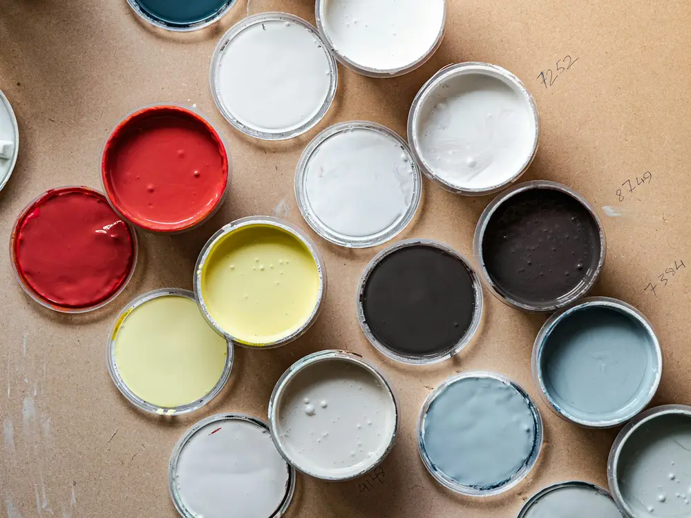
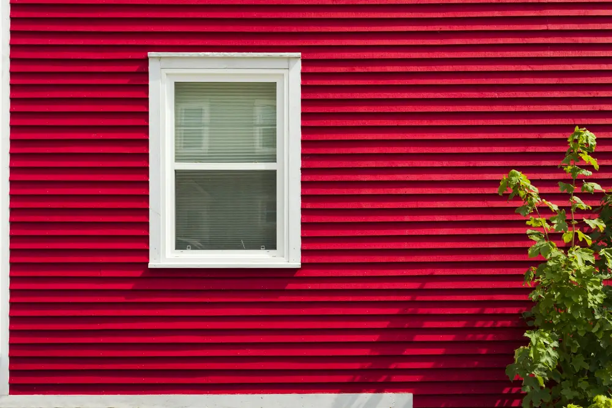
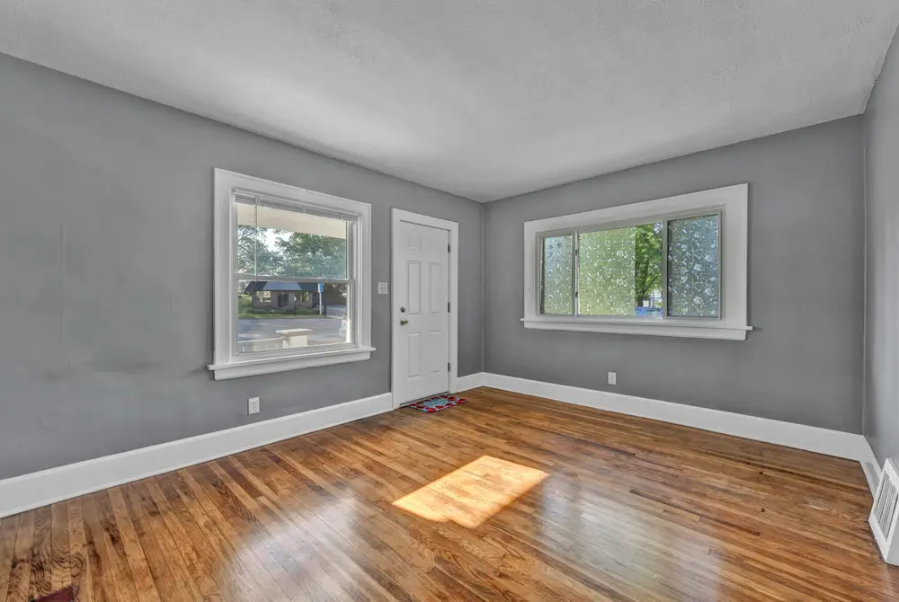

Test colors under your own lights
Fluorescent light is cool and pulls out the green or blue in a color. Incandescent bulbs are warm and bring out the red. Look at a sample in the room you're painting.
A color that looked right in the store can look different at home. Switch the light and watch the wall.
Our tip: put a sample on the wall you're painting and look at it under the lights you actually use.

Picking a color is the fun part. These help it look the way you pictured once it's on the wall.
Fluorescent light is cool and pulls out the green or blue in a color. Incandescent bulbs are warm and bring out the red. Look at a sample in the room you're painting.
Unless white is the look you want. The right color adds depth and can make a plain room feel warm and comfortable.
White doesn't always make a room look bigger. Bright, bold colors open a space more than dull shades. Paint the ceiling lighter than the walls to keep it airy.
Use several shades of one neutral color. The neutral keeps it restful, and the different shades give the room layers and depth.
Bright white on ceilings and walls raises the light level in a building.

Outside, the color has to work with things you can't easily change, like the roof and the style of the house.
Slate, terra cotta, metal or clay: choose a color scheme that sits well with your roof so the house looks like one piece.
The architecture can steer your colors. A colonial home, for example, often looks right in a color from that period.
They're a major cause of rotted sills and peeling paint around the frame and the siding below. With units in, plan to repaint more often.

Most paint problems start underneath. Get the prep right and the finish lasts.
Cracked, peeling paint on siding can come from using the wrong primer. Poor grip means the paint fails.
It sticks where paint alone might not, and it seals porous surfaces so the paint spreads and dries evenly.
Putty or spackle works on small cracks and dents in walls. It won't stick to wood trim.
On a big job, get a bit more paint than you think you need. If you run short it's on hand, and the rest is there for touch-ups.

Sheen and paint type change how a wall looks, how it cleans and how long it holds up.
Close to flat, with more sheen. It washes better, which is why it's so common on interior walls.
Those are the two kinds of exterior paint. Oil based has the longest record for lasting and standing up to weather, and it goes on smooth.
Linseed or alkyd based. Harder to use and slower to dry than water-based acrylic, but the finish is tougher and can last for decades.
From posts on the James Skipper Painting Facebook page.
Call or send the form. We're happy to talk colors, primer and finishes.